작가 소개
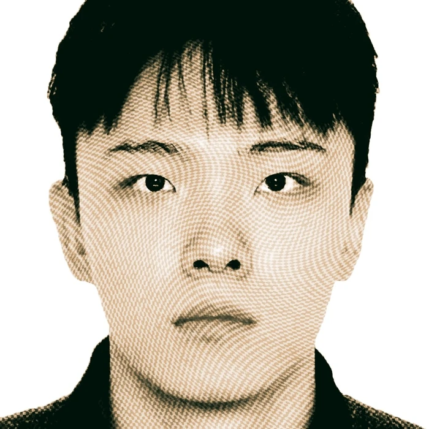
학력
Baekseok Arts University
Visual Communication Design
2023–2026
활동
- 2023 — Vice Representative, School of Design
- 2026 — Graduation Committee, Baekseok Arts University
자격
- Adobe Photoshop Certification
- Adobe Illustrator Certification
사용 도구
InDesign, Figma, Photoshop, Illustrator, Clip Studio, After Effects
VILLAIN UNIVERSE
빌런 유니버스
Character Design · World Building · Visual Development
미래의 몰락한 세계를 배경으로, 서로 다른 능력과 기원을 가진 6명의 악역 집단을 구축하는 캐릭터 디자인 프로젝트입니다. 고도로 발달했던 과거 문명의 유산과 인간의 한계를 넘어선 신체 능력을 가진 인물들을 중심으로 각 캐릭터의 능력, 외형, 성격과 서사를 시각적으로 설계했습니다.
현재는 6명의 캐릭터 중 2명을 중심으로 비주얼 개발을 진행하고 있으며, AI를 활용해 캐릭터의 다양한 포즈, 표정, 의상과 장면을 탐색하고 최종 비주얼로 발전시켰습니다.
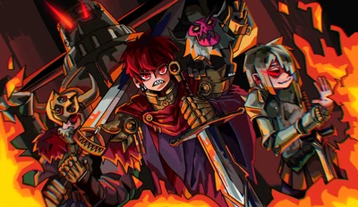
세계관 속 악역 집단이 한 장면에 등장하는 모습을 단체 키비주얼로 표현했습니다. 각 캐릭터의 특징적인 실루엣과 표정을 과장하고, 강렬한 색채와 카툰 스타일을 적용해 집단의 위압적이면서도 개성적인 이미지를 표현했습니다.
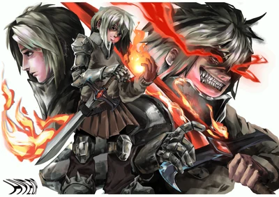
기본 모습과 전투 상태, 능력 발현 상태를 한 스프레드 안에 구성한 캐릭터 디자인 일러스트입니다. 신체의 일부를 극한까지 소모시키며 전투력을 끌어올리는 광폭화형 전투원으로, 자신을 손상시키는 대가로 비정상적인 근력과 속도를 획득합니다. 내부에서 발생한 열과 에너지를 외부로 방출해 화염을 생성하며, 전투가 격렬해질수록 강해지지만 신체 역시 빠르게 붕괴합니다.
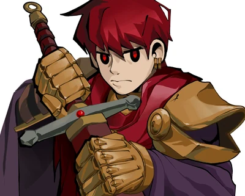
캐릭터의 인상과 디자인 요소를 강조하기 위해 제작한 단독 키비주얼입니다.
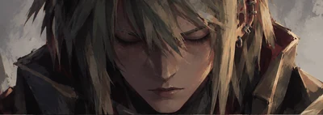
{kind=link}
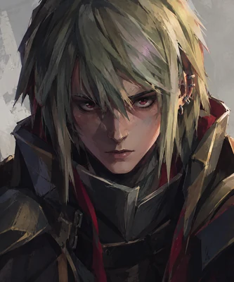
AI를 활용한 캐릭터 비주얼 탐색.
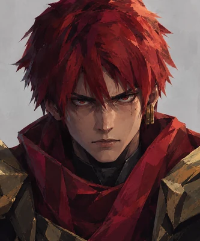
AI를 활용한 캐릭터 비주얼 탐색.
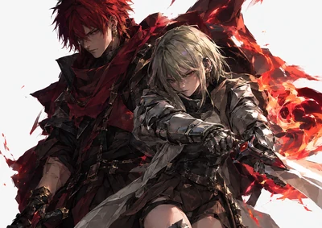
AI를 활용한 캐릭터 및 장면 탐색.
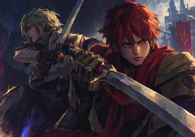
AI를 활용한 캐릭터 및 장면 탐색.
FRIEREN
캐릭터 일러스트
Character Illustration
나만의 선화와 채색 방식으로 재해석한 일러스트.
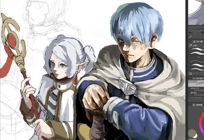
PAIN
캐릭터 일러스트
Character Illustration
나만의 선화와 채색 방식으로 재해석한 일러스트.
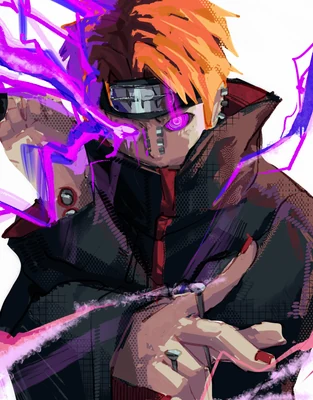
AKAZA
캐릭터 일러스트
Character Illustration
나만의 선화와 채색 방식으로 재해석한 일러스트.
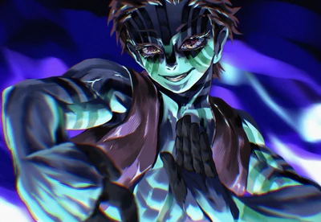
ORIGINAL CHARACTER
오리지널 캐릭터 일러스트
Original Character Illustration
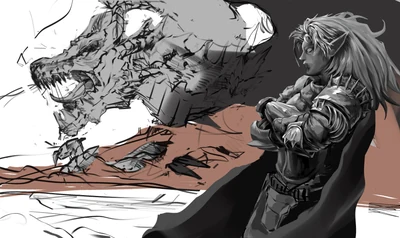
CHWIRAM BLUE
한국 전통의 색과 이미지
Graphic Poster
한국 전통의 색채와 이미지를 현대적인 그래픽으로 재해석한 포스터 작업.
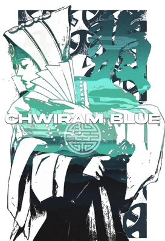
FANTASY WARRIOR
캐릭터 스케치
Character Sketch
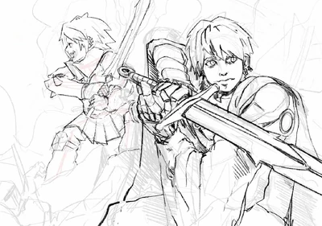
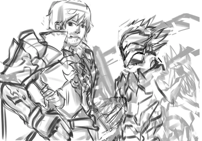
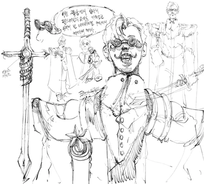
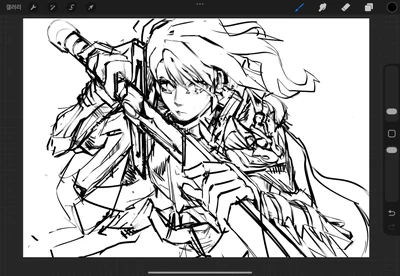
DEMON OF THE BATTLEFIELD
전장의 악마
Graphic Poster
중세 기사의 전쟁과 그 이면에 존재하는 폭력성을 주제로 제작한 그래픽 포스터.
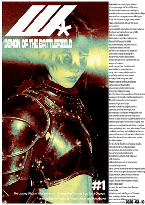
IMAGE EXPERIMENTATION
이미지 실험
Photoshop Experiment
새로운 시각적 이미지를 제작한 Photoshop 실험 작업.
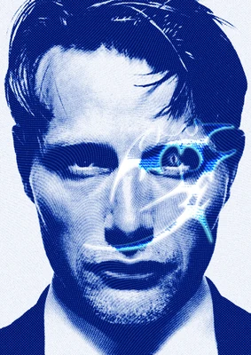
기타 작품 / Other Works
기타 작품
Drawing · Graphic · Editorial
드로잉과 그래픽, 편집 디자인 작업을 모았습니다.
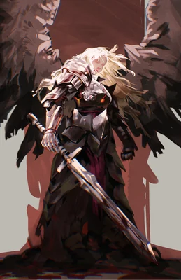
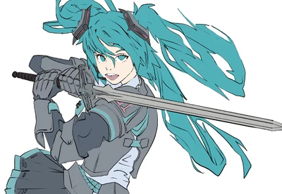
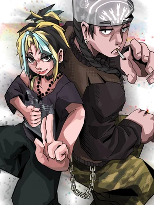
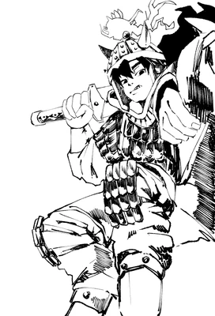
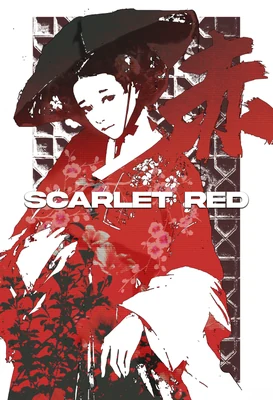
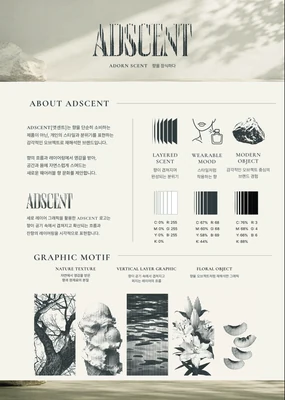
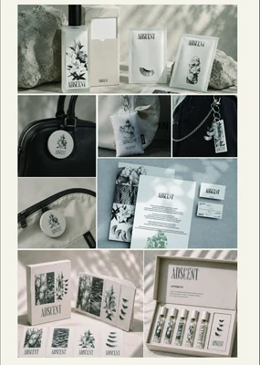
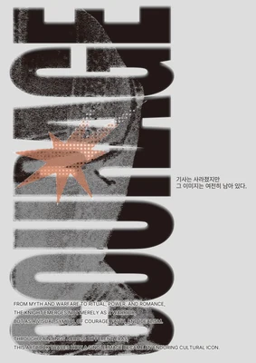
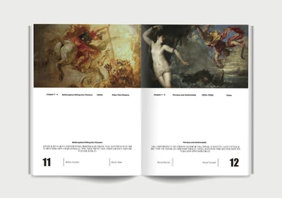
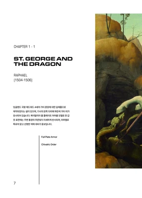
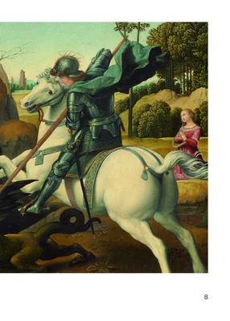
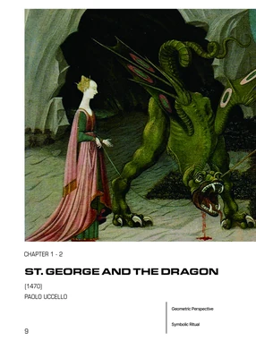
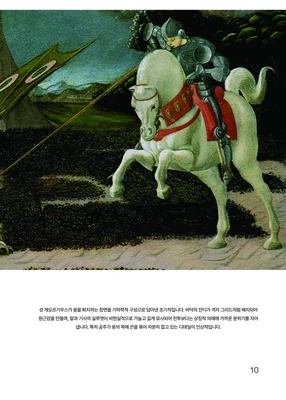
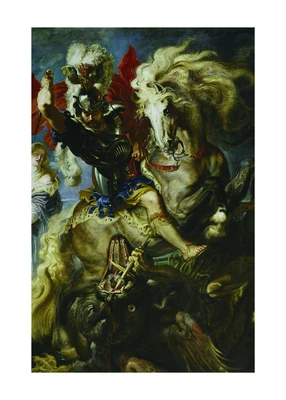
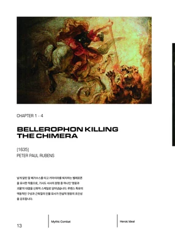
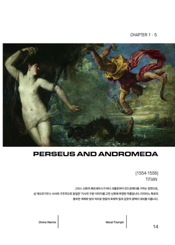
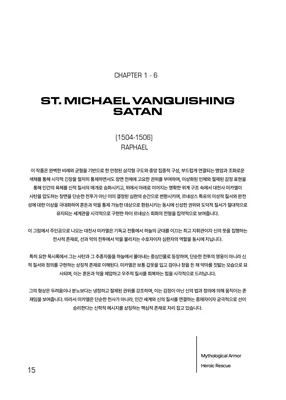
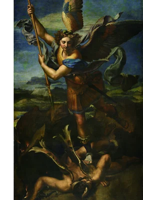
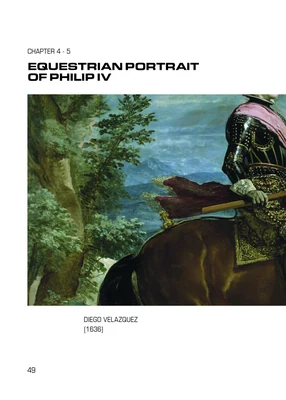
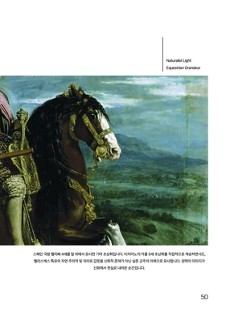
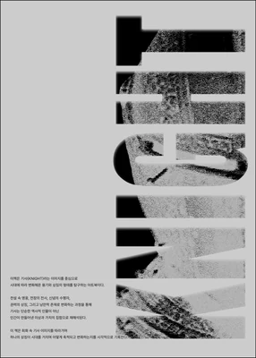
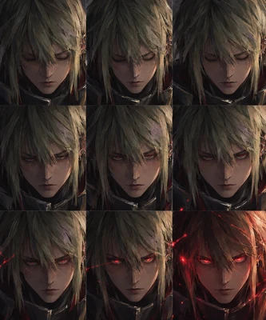
AI를 활용한 캐릭터 표정 탐색.
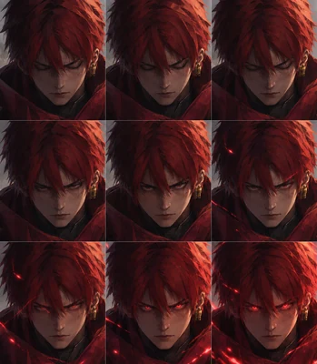
AI를 활용한 캐릭터 표정 탐색.